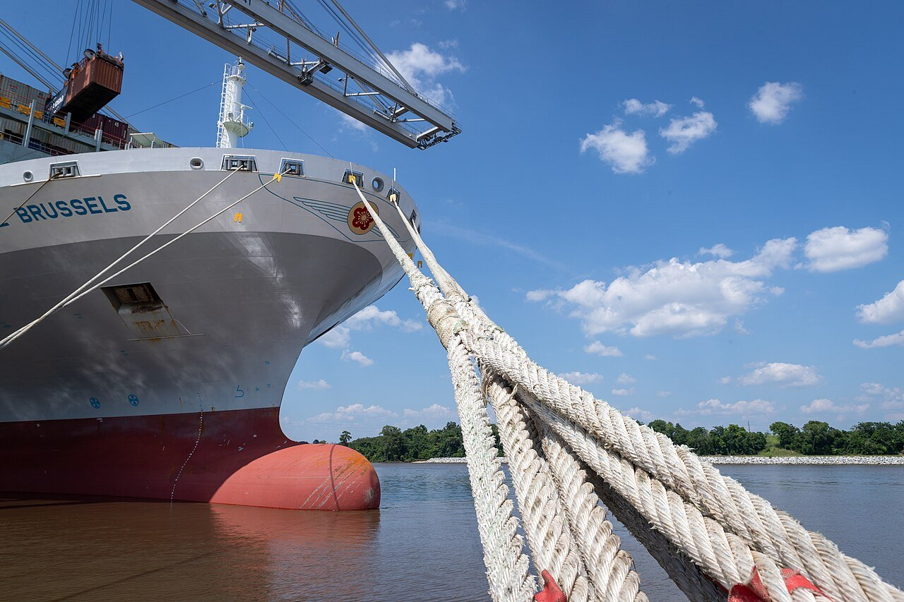
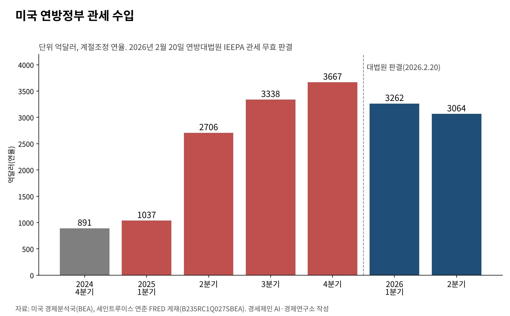
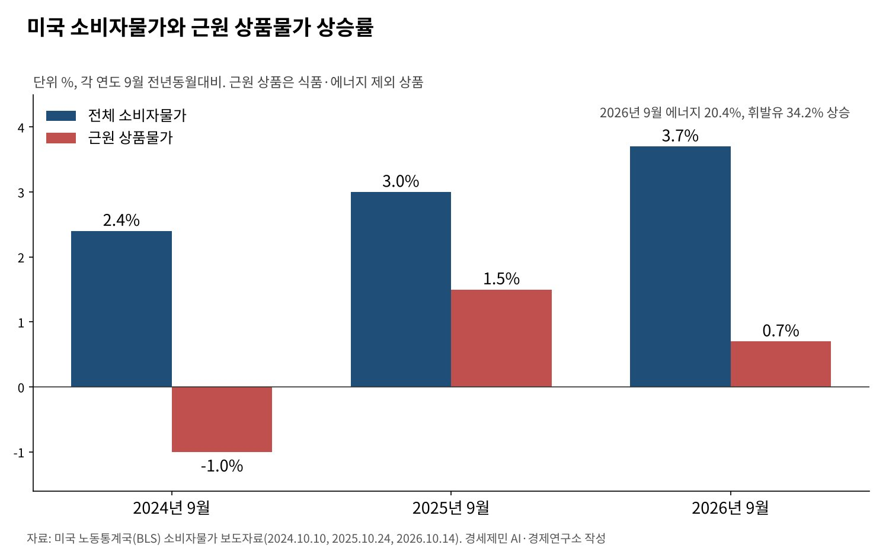

[트럼프 관세전쟁⑧] 관세는 미국 안에서 냈다, 수입업체와 소비자가 진 부담 90%
뉴욕연준 "2025년 관세 부담 약 90% 미국 몫", 킬세계경제연구소 "96%"
관세 수입 연율 3667억달러로 정점, 대법원 판결 뒤 2분기 3064억달러
9월 근원 상품물가 0.7% 상승, 예일대 "현행 관세로 가구당 연 1100달러 부담"
이 연재는 지난해 7월 관세가 미국 기업의 가격 인상을 거쳐 소비자 부담으로 돌아온다고 짚었다. 그때는 예고였다. 1년여가 지난 지금 그 질문에 답하는 연구가 쌓였다.
뉴욕연방준비은행 연구진은 2025년 관세의 경제적 부담 가운데 90% 가까이를 미국 기업과 소비자가 졌다고 분석했다. 독일 킬세계경제연구소는 그 몫을 96%로 셈했다.
관세는 수입품에 매기는 세금이다. 누가 실제로 내는지는 수출업체가 값을 얼마나 깎는지에 달렸다. 미국 정부 통계와 국제 연구로 관세 부담이 어디에 떨어졌는지 따라간다.

1. 뉴욕연준 "외국 수출업체 몫은 6~14%"
뉴욕연준의 메리 아미티 연구진은 2월 12일 분석을 냈다. 미국 수입품의 평균 관세율은 2025년 한 해 2.6%에서 13%로 올랐다. 연구진은 품목·국가별 월간 수입 통계로 수출가격 변화를 쟀다.
1~8월에는 관세 부담의 94%를 미국 수입업체가 졌다. 9~10월 92%, 11월 86%로 조금씩 줄었다. 수출업체가 값을 깎아 떠안은 몫은 6%에서 14%로 늘었지만 여전히 작다.
연구진은 12월 평균 관세율 13%를 적용하면 관세가 붙은 상품의 수입가격이 붙지 않은 상품보다 11%가량 더 올랐다고 추정했다. 중국산 몫은 줄고 멕시코·베트남산 몫이 늘었다.
킬연구소는 선적 기록 2500만건, 미국 수입 4조달러어치를 분석해 1월 보고서를 냈다. 외국 수출업체가 진 몫은 4%였다. 2025년 미국 관세 수입은 약 2000억달러 늘었다.
외국도 비용을 피하지 못했다. 다만 값이 아니라 물량으로 치렀다. 킬연구소는 관세가 50%로 오른 뒤 인도의 대미 수출이 금액과 물량 모두 최대 24% 줄었고, 단가는 그대로였다고 밝혔다.

2. 2018년 관세 때도 같은 결과
이번 결과는 처음이 아니다. 2018~2019년 미중 무역분쟁 때도 연구 결론은 같았다. 파블로 파이겔바움 등은 관세가 붙은 수입품의 값이 내려가지 않아 관세가 수입가격에 온전히 옮겨졌다고 봤다.
이들은 미국 소비자와 기업이 수입품 값 상승으로 510억달러, 국내총생산(GDP)의 0.27%를 잃었다고 추정했다. 관세 수입과 국내 생산자 이익을 빼도 순손실은 72억달러였다.
국경에서 다 옮겨진 관세가 가게 진열대까지 다 가지는 않았다. 알베르토 카발로 등은 2018년 관세가 수입업체 가격에 거의 다 반영됐다고 봤다. 소매가격 상승 폭은 그보다 작았다.
연구진은 소매업체가 이윤을 줄여 관세 일부를 떠안았다고 풀이했다. 관세 전에 재고를 미리 쌓은 효과도 있었다. 소비자 부담이 늦게 나타나는 까닭이다. 지난해 기업들의 예고와 같은 구조다.
3. 관세 수입 연율 3667억달러, 판결 뒤 줄어
미국 경제분석국 통계로 연방정부 관세 수입은 2024년 4분기 연율 891억달러였다. 2025년 1분기 1037억달러, 2분기 2706억달러, 3분기 3338억달러로 뛰었다. 4분기 3667억달러로 1년 새 4배가 됐다.
연방대법원이 2월 20일 국제비상경제권한법(IEEPA) 관세를 무효로 판결한 뒤 수입은 줄었다. 올해 1분기 3262억달러, 2분기 3064억달러다. 세율 근거가 바뀌며 실효 관세가 낮아졌다.
예일대 버짓랩은 판결 직후 대체 관세가 없다면 실효 관세율이 9.1%라고 봤다. 그래도 2025년을 빼면 1946년 이후 가장 높다. 8월 24일 현재 평균 법정 관세율은 11.0%다.
관세 수입은 미국 정부의 세수다. 그 돈은 미국 수입업체가 세관에 낸다. 연구 결과대로라면 이 세수의 대부분은 외국이 아니라 미국 기업과 소비자의 주머니에서 나왔다.
4. 물가에는 늦게, 고르지 않게 번진다
노동통계국 자료로 근원 상품물가(식품·에너지 제외 상품)는 2024년 9월 1년 전보다 1.0% 내렸다. 2025년 9월에는 1.5% 올랐다. 같은 기간 전체 물가 상승률은 2.4%에서 3.0%가 됐다.
올해 9월 근원 상품물가 상승률은 0.7%로 낮아졌다. 의류는 3.4% 올랐다. 같은 달 전체 소비자물가는 3.7% 올랐는데 에너지 20.4%, 휘발유 34.2% 상승이 끌어올렸다.
예일대 버짓랩은 현행 관세가 물가를 결국 0.7% 높이고 가구당 연 1100달러를 부담시킨다고 추정했다. 관세 수입은 10년간 약 1조9000억달러로 내다봤다.

5. 관세는 소비세처럼 걷힌다
수입품 값에 붙는 관세는 사실상 소비에 매기는 세금이다. 가구당 1100달러는 평균이다. 소득에서 소비가 차지하는 몫이 큰 가구일수록 같은 금액이 더 무겁다.
중간재 관세는 제조업 원가도 올린다. 연준의 아론 플라엔과 저스틴 피어스는 2018~2019년 관세에 많이 노출된 제조업에서 고용이 상대적으로 줄었다고 분석했다. 원가 상승과 보복관세가 보호 효과를 넘었다.
관세의 목표가 무역적자 축소와 제조업 회복이라면 비용도 함께 따져야 한다. 미국 가계가 낸 관세가 일자리와 생산으로 돌아오는지는 세수가 아니라 고용과 투자 통계로 확인해야 한다.
관세는 국경에서 걷히지만 부담은 국경 안에 남았다. 외국 수출업체는 값 대신 물량을 줄였다. 미국 소비자는 늦게, 그러나 확실하게 그 값을 치른다. 관세의 성적표는 세수가 아니라 가계의 장바구니에서 매겨진다.
참고문헌
기관 자료
- 미국 노동통계국(BLS), "Consumer Price Index – September 2026", 2026년 10월 14일. https://www.bls.gov/news.release/cpi.nr0.htm
- 미국 노동통계국(BLS), "Consumer Price Index – September 2025", 2025년 10월 24일. https://www.bls.gov/news.release/archives/cpi_10242025.htm
- 미국 노동통계국(BLS), "Consumer Price Index – September 2024", 2024년 10월 10일. https://www.bls.gov/news.release/archives/cpi_10102024.htm
- 미국 경제분석국(BEA) 자료, 세인트루이스 연방준비은행 FRED, "Federal government current tax receipts: Taxes on production and imports: Customs duties(B235RC1Q027SBEA)", 2026년 10월 21일 열람. https://fred.stlouisfed.org/data/B235RC1Q027SBEA.txt
연구 논문과 보고서
- Amiti, M., Flanagan, C., Heise, S., & Weinstein, D. E., "Who Is Paying for the 2025 U.S. Tariffs?", 『Liberty Street Economics』(뉴욕연방준비은행), 2026년 2월 12일. https://libertystreeteconomics.newyorkfed.org/2026/02/who-is-paying-for-the-2025-u-s-tariffs/
- Hinz, J., Lohmann, A., Mahlkow, H., & Vorwig, A., "America's Own Goal: Who Pays the Tariffs?", 『Kiel Policy Brief』(킬세계경제연구소), 2026년 1월. https://nachrichten.idw-online.de/2026/01/19/america-s-own-goal-americans-pay-almost-entirely-for-trumps-tariffs
- Yale Budget Lab, "The State of U.S. Tariffs", 2026년 8월 24일 갱신. https://budgetlab.yale.edu/research/state-us-tariffs
- Yale Budget Lab, "State of U.S. Tariffs: SCOTUS Ruling Update", 2026년 2월 20일. https://budgetlab.yale.edu/sites/default/files/page_to_pdf/1292/publication_1292.pdf
- Fajgelbaum, P. D., Goldberg, P. K., Kennedy, P. J., & Khandelwal, A. K., "The Return to Protectionism", 『The Quarterly Journal of Economics』 135(1), 2020년, pp.1-55. https://www.nber.org/papers/w25638
- Cavallo, A., Gopinath, G., Neiman, B., & Tang, J., "Tariff Pass-Through at the Border and at the Store: Evidence from US Trade Policy", 『American Economic Review: Insights』 3(1), 2021년, pp.19-34. https://www.nber.org/papers/w26396
- Flaaen, A., & Pierce, J., "Disentangling the Effects of the 2018-2019 Tariffs on a Globally Connected U.S. Manufacturing Sector", 『Finance and Economics Discussion Series』 2019-086, 연방준비제도이사회, 2019년. https://www.federalreserve.gov/econres/feds/disentangling-the-effects-of-the-2018-2019-tariffs-on-a-globally-connected-us-manufacturing-sector.htm
언론 보도
- 해당 없음
법률 분석
- Jones Day, "United States Supreme Court Invalidates IEEPA Tariffs", 2026년 2월. https://www.jonesday.com/en/insights/2026/02/united-states-supreme-court-invalidates-ieepa-tariffs
[사진 출처]
- [사진1] CBP Photography, "Port of Savannah Non-Intrusive Inspections (NII) and Cargo Operations (53068224077).jpg", 위키미디어 공용, 퍼블릭 도메인. https://commons.wikimedia.org/wiki/File:Port_of_Savannah_Non-Intrusive_Inspections_(NII)_and_Cargo_Operations_(53068224077).jpg
※ 이 기사는 AI 프로그램 클로드를 활용해 작성했습니다.
관련기사
- [트럼프 관세전쟁①] 트럼프 관세압박, 미국이라고 다 유리할까
- [트럼프 관세전쟁②] 일본과 베트남은 왜 그래야만 했을까
- [트럼프 관세전쟁③] EU는 왜 어떻게 15%를 수용했나
- [트럼프 관세전쟁④] 「나머지는 15~20%」 발언과 한미 관세협상
저작권자 © AI경세제민 무단전재 및 재배포, AI학습 및 활용 금지